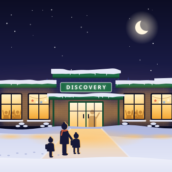

Coach
Build God-centered relationships with elementary students and Student Leaders through conversation, activities and prayer. Help guide and model good leadership to Student Leaders.
- Adults only

Home Volunteer
Why volunteer
Our desire is to see God’s Kingdom come here on earth. We invite others who share that passion to consider contributing their time, talent and/or treasure to TeamKid.
Opportunities
The list below is not exhaustive — you may even have a talent not listed. We seek, above all, to honor God, and our desire is for God to be glorified through the gifts He has given. Roles and frequency are flexible: join us weekly, on special occasions, and everything in between.
8 roles
Build God-centered relationships with elementary students and Student Leaders through conversation, activities and prayer. Help guide and model good leadership to Student Leaders.
Build God-centered relationships with elementary students through conversation, activities and prayer. Fill in wherever is needed: work in small groups, teach Bible verses and song motions.
Worship music selection and/or vocals — may include movement and instruments.
Assist leadership with registration and/or communications.
Coordinate the snack schedule sign-up.
Plan, prep and/or facilitate an occasional game or activity.
Prepare and/or facilitate an occasional craft.
Assist with TeamKid set-up at 3:00 PM and/or clean-up at 5:00 PM.
Expectations
To that end, volunteers are asked to:
Covenant
Adult leaders and student leaders each agree to the following:
I understand I am at TeamKid Williamston to help children know, live and share the Truth of Jesus Christ.
I understand how important it is for me to help children behave in a kind, safe, and respectful way. I will do my best to understand and implement all TeamKid and school rules.
I understand that children are strongly impacted by my words. I will do my best to only use language that is kind, encouraging, safe, and respectful.
I understand that children imitate my behavior. I commit to actively listen and participate in each TK activity. I will avoid distracting side-conversations with other volunteers and students so the children can learn.
I commit to putting away all electronic devices for the duration of TeamKid. I realize that I am modeling what it means to be an attentive participant.
I know that I must rely on God for strength and wisdom as I minister to His children, so I will seek to grow as a devoted Christ follower through attendance of a local church, prayer and studying God’s word.
I commit to praying for the children, their parents, and other volunteers working with children.
I understand that the expectations in place are for the protection of children and myself. I agree to follow these expectations and I am committed to keeping children safe.
I commit to being a positive mentor to the Student Leaders in my group and encouraging them to be positive mentors to the elementary students.
I understand I am at TeamKid Williamston to help children know, live and share the Truth of Jesus Christ.
I understand how important it is for me to help children behave in a kind, safe, and respectful way. I will do my best to understand and implement all TeamKid and school rules.
I understand that children are strongly impacted by my words. I will do my best to only use language that is kind, encouraging, safe, and respectful.
I understand that children imitate my behavior. I commit to actively listen and participate in each TK activity. I will avoid distracting side-conversations with other volunteers and students so the children can learn.
I commit to putting away all electronic devices for the duration of TeamKid. I realize that I am modeling what it means to be an attentive participant.
I will try my best to grow in my own personal faith by attending church, reading the Bible and praying.
I commit to praying for the children in my group and for their parents.
I understand that the expectations in place are for the protection of children and myself. I agree to follow these expectations and I am committed to keeping children safe.
FAQs
God honors willingness. We seek to follow His lead. Like other settings, you will find volunteers at different stages of their faith journey. Your commitment to keep growing in your faith is the primary requirement.
We do ask that TeamKid leadership, station facilitators and coaches be committed followers of Jesus Christ. This is evidenced by spending regular time in God’s Word, communicating with Him in prayer, sharing your life with a local body of believers and living by faith in obedience to His Word.
There are varied levels of involvement. From 1–4 times per month to helping on occasion with special events, you can indicate your availability on the volunteer application.
We do ask that you show up when you’re scheduled. When a conflict is foreseeable, please attempt to find a replacement — contact information for substitute volunteers will be made available. We also have designated on-call volunteers available in the event of an emergency or illness. Please call or text TeamKid leadership as soon as possible on these rare occasions.
Also, you are always welcome to show up when you haven’t been scheduled. We appreciate the extra help — simply let the leader know you’re there.
Volunteer training will be a one-time meeting each year and will occur 1–2 weeks before TeamKid officially starts. We will cover TeamKid philosophy and goals, group management, and expectations, and will help acquaint you with the timing and structure of a session.
After the season starts, TeamKid leadership will check in regularly to see how we can best pray for, support, and encourage you. Because our middle schoolers are our youngest volunteers, TK leaders meet with them once a month at the middle school during lunch. These times provide an opportunity to listen to any concerns they may have, offer encouragement, and help them grow in their faith as they serve.
Please email any questions to teamkidwilliamston@gmail.com. We look forward to hearing from you!